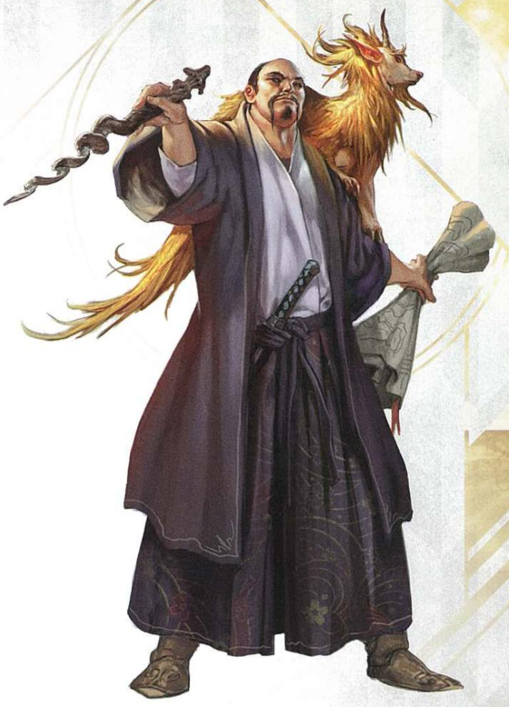

- Средний, Гуманоид, Любое мировоззрение
- Класс доспеха: 12 (15 с доспехами мага)
- Хиты: 40 (9d8)
- Скорость: 30 фт.
-
СИЛ 9 (-1)ЛОВ 14 (+2)ТЕЛ 11 (0)ИНТ 17 (+3)МДР 12 (+1)ХАР 11 (0)
- Навыки: История +6, Магия +6
- Чувства: Пассивная внимательность 11
- Языки: Все
- Опасность: 6 - 2300 оп.
- Источник: «Monster manual»

Способности
- Языки. Маг знает до 4 любых языков.
-
Использование заклинаний. Маг является заклинателем 9
уровня. Его базовой характеристикой является Интеллект (Сл
спасброска от заклинания 14, +6 к попаданию атаками заклинаниями).
У него подготовлены следующие заклинания волшебника:
- Заговоры (неограниченно) волшебная рука, огненный снаряд, свет, фокусы
- 1 уровень (4 ячейки): волшебная стрела, доспехи мага, обнаружение магии, щит
- 2 уровень (3 ячейки): внушение, туманный шаг
- 3 уровень (3 ячейки): контрзаклинание, огненный шар, полёт
- 4 уровень (3 ячейки): высшая невидимость, град
- 5 уровень (1 ячейка): конус холода
Действия
- Кинжал. Рукопашная или дальнобойная атака оружием: +5 к попаданию, досягаемость 5 фт. или дистанция 20/60 фт., одна цель. Попадание: Колющий урон 4 (1d4 + 2).
Описание
Маги тратят жизнь на изучение и применение на практике магии. Добрые маги служат советниками при дворянах и правителях, а злые маги живут в изолированных местах и творят жуткие эксперименты.